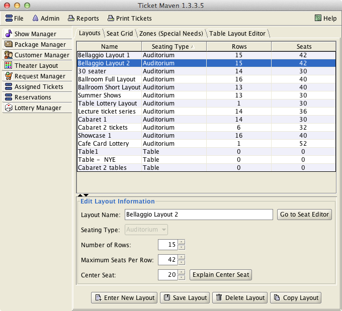
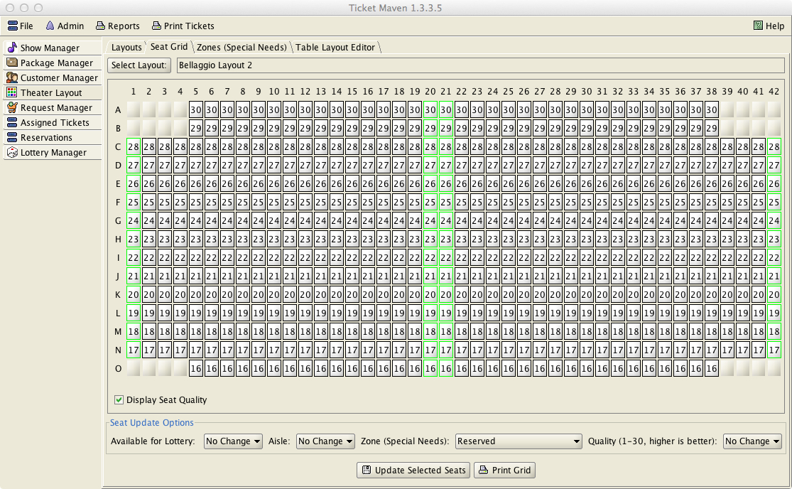
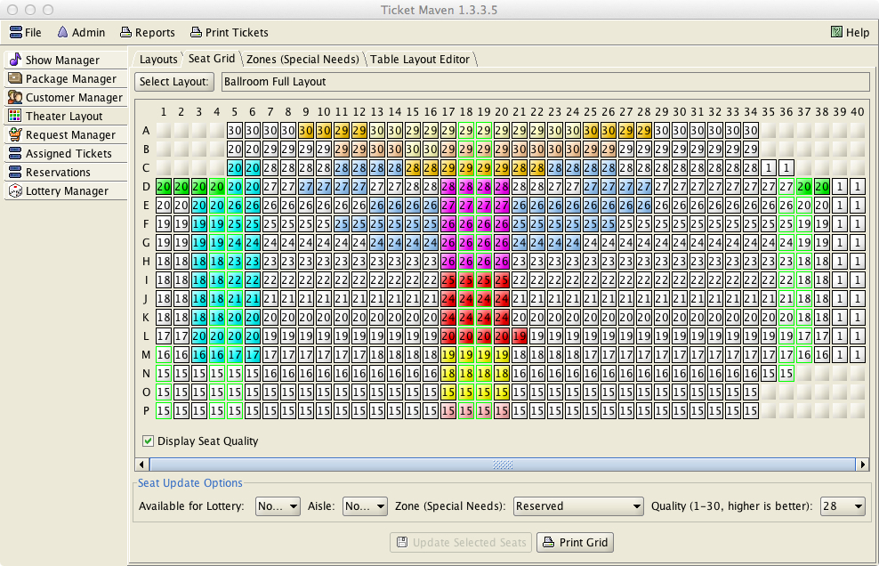

Theater Layouts
With TicketMaven you can define multiple seating layouts for your auditorium and use different layouts for different shows.
Layouts are managed from the Theater Layout tab on the main window. To manage layouts, select this tab and then hit the proceed button on the bottom of the screen after reading the warning message. Layouts drive how the ticket lottery functions and should be changed carefully.
The tabs that are used to manage layouts are described below:
Layouts Tab
This tab manages your layouts. It displays a table
showing your layouts and information about them. This tab is where
you would add new layouts and delete layouts.
When adding a new
layout, you first need to select a type of table or auditorium style.
Then, for auditorium style layouts, you need to specify the number of
rows of seats in the layout and the number of seats per row.

When you first add a new auditorium layout by typing its information in and hitting the Save Layout button, the grid of seats is automatically created for you. The initial grid of seats is rectangular with the dimensions that you specify and a chair in each position. If you need to create aisles, remove chairs to create a non-rectangular pattern, or otherwise change individual seats, you would then use the Seat Grid tab.

When you create a new table layout, nothing is added automatically. You need to use the Table Layout Editor to graphically create your table layout.
Seat Grid
This tab is used for editing seats in a layout. Once a
layout is selected via the Layout:
button, the seats will appear in a grid. Multiple seats
can be edited at the same time. To change the parameters of some
seats, select all of the seats to be updated, then select the values
to be updated in the Seat
Update Options panel, and finally
press the Update
Selected Seats button.
Each
seat in the grid is represented as a button. The button is completely
blank if a seat is not available for a lottery – which means that
there is no chair in a particular location. To remove seats from your
grid, update the seats to make them unavailable for the lottery by
using the Available for Lottery pull-down menu (value = N). Making
seats unavailable allows you to create non-rectangular layouts.
All
seats that are available will contain a number from 1 to 30. This
indicates the seat quality
with 30 being the best. The program initially sets seat
qualities for your layout that start with 30 in the front row and
decrease in quality by 1 for each row you move away from the front.
Change these quality values as needed.
The most common change might be to mark seats off to
the sides of the auditorium as being of lesser quality than center
seats. (if your auditorium is wide). This
quality value is the critical factor in assigning seats to customers
and in recording the quality of tickets a customer has received in
order to assign seats for future shows.
Aisle
seats are marked with a green border. Initially, the left and right
sides of your grid are marked as aisles. You should mark seats
elsewhere in your grid as being aisle seats if there are more aisles
in your seating layout. Marking aisles correctly is critical to
prevent the program from splitting a single request for tickets
across an aisle. If the aisles are correctly identified, parties of 2
or more will not be split across an aisle.
Special Needs seats
are shown in color. For each seat you can assign a single special
needs type from the list of types you define under the Zones tab.
Special needs types are described elsewhere under a separate help
topic.
This tab is used to define custom special needs zones.
The program is aware of a certain set of built-in special needs
categories (front, rear, aisle, front-row-only). These are always
available for customers and do not need to be specified on the Zones
tab or in your seating layout. Custom zones created via this tab must
be assigned to seats and customers in order for them to have any
affect on ticketing.
Once a custom zone is created with this
tab, seats and customers can be assigned to that zone. Any seats in
your layout can be assigned to a custom zone via the Seat Grid
mentioned above. Seats in a custom zone do not have to be assigned in
rectangular arrangements. Seats can be assigned to any zones in any
arrangement.
A zone can be marked as exclusive or non-exclusive.
If a zone is exclusive, then seats in that zone can only be assigned
to customers with a matching special need. If a zone is not
exclusive, then seats in that zone can be assigned to non- special
needs customers if there are no special needs customers that need
them. Exclusive zones are not common.

An interesting use of zones would be to keep seats
reserved for manual ticketing. If a zone were to be created called,
“Reserved,” with exclusive set to Y (yes), and if no customers
were given the “Reserved” special need, then these seats would be
always be left unassigned during the ticket lottery, but would be
available for manual assignment via the Assigned Tickets tab.